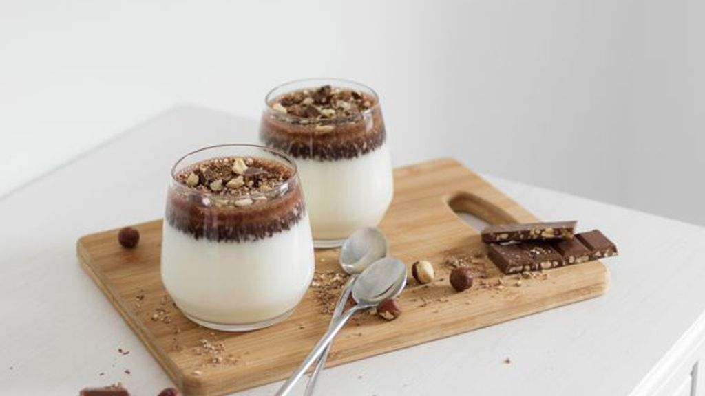

PANNA COTTA (POSTRE)

Ingredientes:
- LECHE
- CHOCOLATE BLANCO
- HUEVO
Pasos a seguir:
- Paso: Ponemos en un bol 200ml de leche media barra de chocolate blanco y 1 huevo.
- Paso: Lo batimos y lo dejamos en la nevera 36 horas.
- Paso: Listos para comer.
👌✓